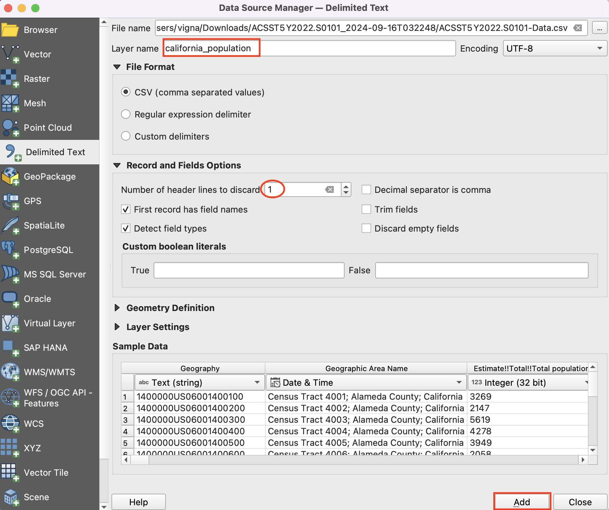
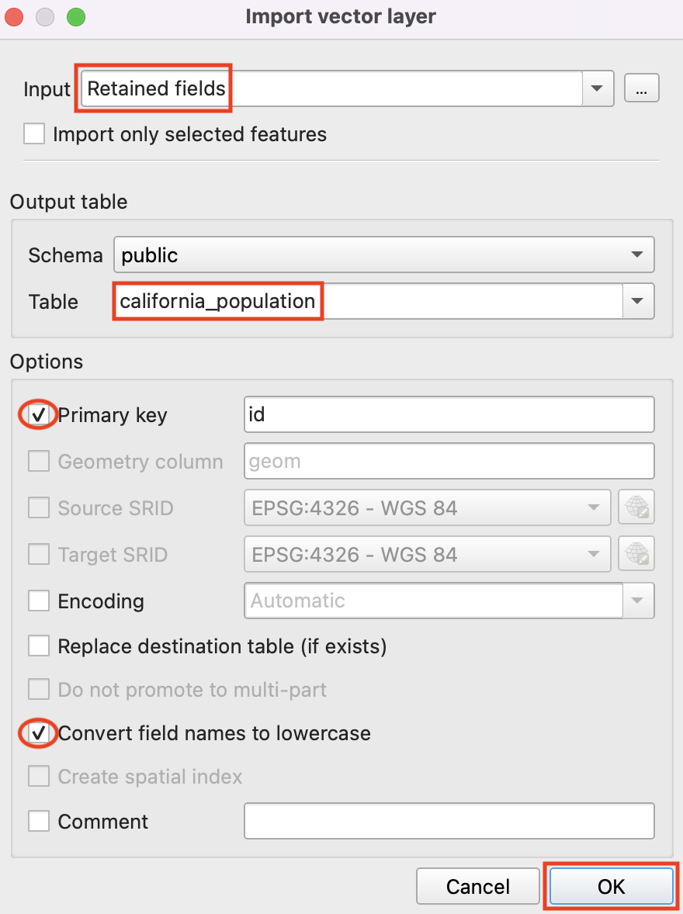
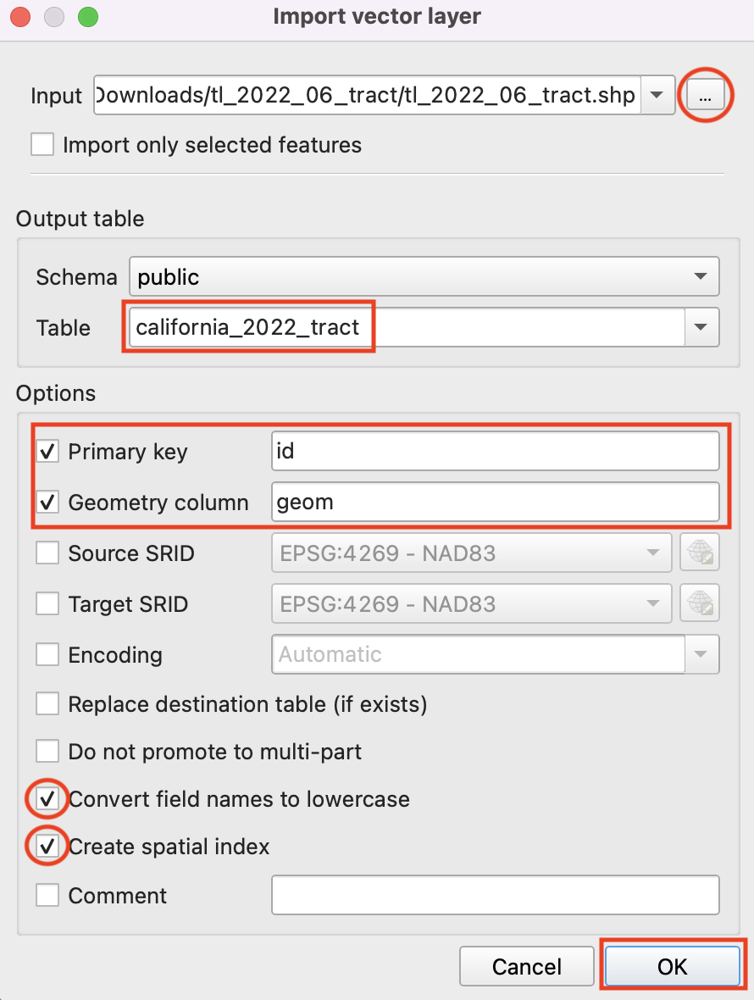

A Step-by-Step Guide to Upload and Update PostgreSQL Tables Using QGIS
In this tutorial, you will see a simple Table Join operation using postgreSQL. This is required when you need to add some information to the shapefile attribute from other tabular data. For this workflow, we will prepare the data to create a population density map for the year 2022 for California. We will use a shapefile of census tracts for California and a population data table from the US Bureau.
You can get more information on downloading the dataset from the tutorial which demonstrates the same using QGIS tools. - https://www.qgistutorials.com/en/docs/3/performing_table_joins.html.
You can download a copy of both the datasets below.
1 ACSST5Y2022.S0101_2024-09-16T032248.zip
Workflow
1. We will upload the input data files to the server using QGIS. First, connect to the server using the PostgreSQL option in the browser panel. Right-click on PostgreSQL –> New Connection. You can skip this if already connected to the server.
2. You will see the dialogue where you need to fill in the details and credentials to connect to the server. Fill all the required details and click ‘Ok’ to connect.
3. Next step is to upload the population table and the tracts shapefile to the database. We will add the population CSV to the QGIS to format it correctly and detect the field type. Click on the ‘Data Source Manager’ icon and look for the ‘Delimited Text’ option as we are adding the CSV file.

4. Browse to the file and set the layer name as ‘california_population’ to simplify. Our CSV data has two headers columns where the first one looks irrelevant. Under the ‘Record and Fields Options’ we will choose 1 column to discard from the top. Click on ‘Add’ to see the ‘california_population layer loaded in QGIS.’

5. We have over 450 fields in the table. We just need the total estimated population and some fields with the location information. Let’s delete fields that are not required. Go to Processing -> Toolbox and search for ‘Retain Fields’ tool.

6. Select the ‘california_population’ table as Input Layer and click on the … button for field selection.

7. Select the top three fields which are ‘Geography’, ‘Geographic Area Name’ and ‘Estimate!!Total!!Total Population’ and click ‘Ok’.

8. Keep the Output Layer field empty and click the ‘Run’ button to generate the temporary output with required fields.

9. Now, we will add this table to the postgres database. Go to Database - > DB Manager.

10. In the DB Manager window, you will see a postGIS provider and the postgres server connection. It has the default ‘public’ schema. We will upload our tables to the schema. Select the schema and click on ‘Import Layer/File’ to upload the ‘Retained Fields’ table.

11. You will see the window to upload the layer where you will select the input layer, give the table name, create an ‘id’ field as primary key. Check the box to convert field names to lowercase and click ‘Ok’.

12. You will see the message when it is uploaded successfully.

13. Next step is to upload the California tracts shapefile on the postgres database. It has the spatial information and we need a postGIS extension to work with the spatial data on postgres.
In the DB Manager switch to ‘SQL Window’.
14. In the query window, use the following command to add the postGIS extension to your postgres server. Click on the ‘Execute’ button to add the extension.
‘CREATE EXTENSION postgis’

15. Now we are ready to upload the ‘tl_2022_06_tract.shp’ to the server. We will directly add it to the server using ‘DB Manager’. Click on ‘Import layer/file’ and browse to the ‘tl_2022_06_tract.shp’ layer and give the name ‘california_2022_tract’. Let’s check options for adding a primary key and a geometry column. We will check the option to convert fields to lowercase and add spatial index to the features for faster processing. Click ‘Ok’ to upload.

16. You will see the ‘Import was Successful’ message as soon as it gets imported to the database. We can see the tables under the ‘public’ schema. Select the table from the schema and switch to the ‘Table’ window to view the table. Similarly you can switch to the ‘Preview’ window to get the view of the shapefile.

.png "image_tooltip")
17. We will run queries to join the total population column to the tracts shapefile using a common geoid. The ‘geoid’ field in the ‘california_2022_tracts’ has unique ids for the tracts and the ‘geography’ field in the ‘california_population’ table has the long id for tracts within the US from which we can get the last 11 characters to match with the values in ‘geoid’ field of the tracts table. We will apply queries given below to create a field named ‘geoid’ in the population table to have a common unique field.
Add a new column ‘geoid_pop’ to the table ‘california_population’.
ALTER TABLE california_population ADD COLUMN geoid_pop VARCHAR(20);Update the ‘geoid_pop’ column with the last 11 characters of the ‘geography’ field starting from 10th position.
UPDATE california_population
SET geoid_pop = SUBSTRING("geography"\
FROM CHAR_LENGTH("geography") - 10
FOR 11);
18. You will see the new column ‘geoid_pop’ is added in the ‘california_population’ table.

19. Now, we will create a new table named ‘california_tract_with_pop ’ by joining population information from california_population table to the tract table. Execute the query as you see below and refresh to see the new table added under the ‘public’ schema.
The query selects all the columns from the ‘california_2022_tract’ table and selects "geographic area name" and "estimate!!total!!total population" columns from the ‘california_population’ table. We have assigned t1 and t2 to the input tables for ease in selecting the columns.
CREATE TABLE california_tract_with_pop AS
SELECT t1.*,
t2."geographic area name",
t2."estimate!!total!!total population"
FROM california_2022_tract t1
JOIN california_population t2 ON t1.geoid = t2.geoid_pop
20. You can view the table and right click to get the option to add it to the canvas.
21. The final table has geometries and total population for all tracts which can be used for further analysis or display such as creating a population density map. The full tutorial to create the map using QGIS is available at - https://www.qgistutorials.com/en/docs/3/performing_table_joins.html.